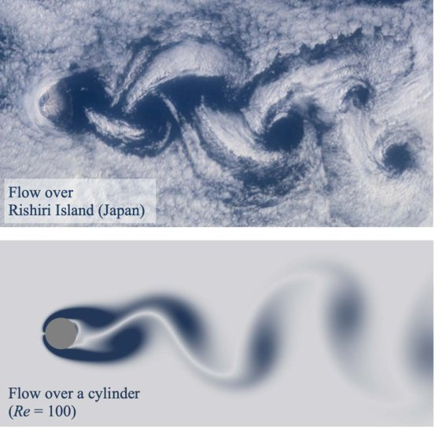

Patterns, Machine learning for fluids dynamics
The second course introduces the patterns and coherent structures in high-dimensional fluid dynamics and how machine learning is currently being used to extract them.
This is a series of brief notes for the popular lesson: Machine Learning for Fluid Mechanics, by Dr. Steve Brunton. He is not only a good instructor, but an active researcher focusing combining techniques in dimensionality reduction, sparse sensing, and machine learning for the data-driven discovery and control of complex dynamical systems.
As we all know, computer vision is one major and advanced field of Machine learning. And the developed CV techniques can be leveraged directly to process fluid fields just by seeing them as images or movies. Some notable works as follows.
Patterns exist

This is the fundamental fact, even in the most complex systems, patterns exist. Just like there are dominant patterns (normally called latent features in the ML world) to define whether there is a human face or a dog in an image, there are dominant patterers to define a fluid field.
Interesting facts: In 1987, Sirovich wrote two papers that pioneered in two fields. In April, he applied the PCA/SVD algorithm to human faces to generate the "eigenfaces" for face recognition[1]. Later in October, he applied this same technique into fluid fields to extract the coherent structures of flow fields[2].
POD/PCA and Autoencoder
Background

POD: Given a complex fluid field sequence such as the von Kármán vortex street, one can tell there's a simple regular pattern emerging here even if it has lots of pixels or generated by a sophisticate simulation with large degree of freedom. The patterns can be extracted by simple tools in linear algebra. For example, subtracting off the mean flow then deploying a singular vector decomposition to get a POD expansion as: \[ \mathbf{u} \approx \bar{\mathbf{u}} + \sum^r_{k=1}\boldsymbol{\psi}_k(x)\mathbf{a}_k(t) \] It writes the spatial-temporal flow field as the mean flow plus the summation of several static eigenflow fields. And the eigen vector \(\mathbf{a}\) changes with time enabling the summation also a function of time \(t\).
POD method has been developed for 50 years and it is a cornerstone on how to analysis complex flow fields.
Note that this can be seen as a special form of the Fourier decomposition, space-time separation of variables. Fourier transform are very useful to decompose space-time variables and POD is a data-driven generalisation of the Fourier transform that satisfies the particular fluid boundary conditions and is generated form physical data of an actual flow simulation.

Autoencoder: In this modern era, the POD/PCA can be rewritten in the form of the neural network as shown above. It works as a bottom neck information filter where the encoder compress the complex data into a latent space and the decoder reconstructs the full flow field image. And the objective is to minimise the distance between the reconstructed image and the original image. And by constraining the hidden layer size as much as possible, the encoder is able to distill the most important fluid coherent structure for reconstruction of the flow field image.

Deep Autoencoder: Now a deep autoencoder with more hidden layers with non-linear activation functions can be deployed to enhance the performance i.e. smaller latent space in the middle, better coordinate representations of the flow field, and simpler representations to work with downstream tasks.
Example
![Deep autoencoder reconstruction examples, (a) NN performs good, (b) NN performs bad. From Milano, M., & Koumoutsakos, P. [3]](Deep autoencoder reconstruction.png)
Michele Milano and Petros Koumoutsakos are the first to introduce AE into fluid dynamic. They applied neural network modelling for near wall turbulent flow[3], and compared with POD results, 2 decades ahead of its time.
Robust PCA
Following the above work, lots of things can be done such as robustify the extraction of patterns, on noisy data, corrupted data or data with outliers.
Background
![Removing shadows, specularities, and saturations from face images. (a) Cropped and aligned images of a person’s face under different illuminations from the Extended Yale B database. The size of each image is 192 × 168 pixels, a total of 58 different illuminations were used for each person. (b) Low-rank approximationˆL recovered by convex programming. (c) Sparse errorˆS corresponding to specularities in the eyes, shadows around the nose region, or brightness saturations on the face. Notice in the bottom left that the sparse term also compensates for errors in image acquisition. After Candès et.al[6]](Removing shadows, specularities and saturations from face images.png)
PIV: Particle Image Velocimetry (PIV) is an experimental technique to measure the fluid non-invasively. And the flow field tend to become highly noisy with higher speed and larger window.
RPCA: While in the field of the image science, Candès et.al[6] suggests the principal components of data can be recovered even if part of the data is arbitrarily corrupted. They describes the corrupted data as a superposition of a Low rank component \(L_0\) and a sparse component \(S_0\), and the robust PCA is presented to recover each components. They also deploy the RPCA to recover the main characters from the background in surveillance videos and remove the shadows and specialities in faces images (as shown above). Why not apply it into the fluid flow images?

PIV uses the cross-correlation algorithm[4] to determine the displacement of each sub-window. This is the exact same algorithm used in the CNNs. However, they call it "convolution"[5], regardless of the fact that the actual convolution method is the transposition of the cross-correlation algorithm.
Example:
![RPCA filtering removes noise and outliers in the flow past a cylinder (black circle), from DNS (left) with 10% of velocity field measurements corrupted with salt and pepper noise, and PIV measurements (right). All frames show resultant vorticity fields. As the parameter λ is decreased, RPCA filtering is more aggressive, eventually incorrectly identifying coherent flow structures as outliers. After Scherl et.al [7]](RPCA for denoising.png)
Isabel Scherl et.al[7] apply the RPCA algorithm to recover the the salt pepper corrupted flow fields, by solving a ralated relaxed optimisation problem. The low rank and sparse component refer to the coherent structure and the noise. And the POD and DMD modes separated from the recovered data can be highly optimised as well.
Super resolution
Background
Super resolution is already a mature field in image sciences, and it can be directly deployed into flow fields.
Example
![Super resolution reconstruction for turbulence flow, the interpolation error of the SHALLOW DECODER error is about 9.3%. After Erichson, N. B. et.al [8]](Super resolution.png)
Above is the result of reconstructing the turbulence flow fields(Johns Hopkins Turbulence Database) from the coarse results obtained by applying an average pooling on the original flow fields[3]. Multiple MLPs are deployed for this task.
![Two different training and test set configurations, showing (a) a within sample prediction task and (b) an out of sample prediction task. Here, the gray columns indicate snapshots used for training, while the red columns indicate snapshots used for testing. After Erichson, N. B. et.al [8]](super resolution interpolation and extrapolation comparison.png)
Yet the good results only happen at the interpolation scenario, for the extrapolation i.e. prediction task, the reconstruction failed. More physics need to add to make this work.
Compared with the flow field prediction, all the CV tasks with large pretrained models are interpolation tasks. The training data already contains all the data that needed.
Statistical stationarity
In stead of a simple flow passed a cylinder, most fluid fields in the real life are more complicated. It brings more difficulties for models to reconstruct the fluid.
Example
![Singular value spectra for the flows studied. The singular values for vortex shedding past a cylinder (blue) converge quickly, whereas the Gulf of Mexico vorticity data (purple) has a long tail. The sea surface temperature (yellow) and mixing layer vorticity (red) are of intermediate complexity. After Callaham, J. L et.al[9]](statistical stationarity.png)
Callaham, J. L et.al [9] apply robust flow reconstruction via sparse representation on flow pass a cylinder, mixing layer, sea surface temperature and gulf of Mexico. And the modes needed to reconstruct each flow fields increase as shown above.
This article mainly shows the sparse model outperforms the general model. But in the discussion session, it brings up the key requirements of the reconstruction: sufficient training data and sufficient measured information. And they quantify the rate of sufficiency in each cases.
![Comparison of the amounts of training data needed to predict the test data. After Callaham, J. L et.al[9]](sufficient training data.png)
The residuals of projecting test data onto the linear subspaces of POD modes of increasing training data is provided. As more data is added to the training set, test set are more likely to be generalised by the training data modes.
Personally, I don't really understand the term projection. Whether it is same as reconstruction but in an opposite direction? Need more knowledge on it.
For flow pass a cylinder, the model performs well even with very few training data since the flow is simple and periodic. However, the mixing layer and Gulf of Mexico vorticity data have relatively large residual, indicating that there are still new structures that haven’t been observed in the training data.
![Comparison of the amounts of measurements needed to reconstruct the test data. After Callaham, J. L et.al[9]](sufficient measurements.png)
Above compares the normalised residual error of sparse representation-based reconstructions with increasing number of random point measurements. Similar to the research on amount of the training data, more information is needed from measurements to reconstruct a more complicate flow field.
The result might be better if a powerful reconstruction model is used such as the Deep Autoencoder. It is still an open area.
Reference
- Sirovich, L., & Kirby, M. (1987). Low-dimensional procedure for the characterization of human faces. Josa a, 4(3), 519-524. ↩︎
- Sirovich, L. (1987). Turbulence and the dynamics of coherent structures. I. Coherent structures. Quarterly of applied mathematics, 45(3), 561-571. ↩︎
- Milano, M., & Koumoutsakos, P. (2002). Neural network modeling for near wall turbulent flow. Journal of Computational Physics, 182(1), 1-26. ↩︎
- Keane, R. D., & Adrian, R. J. (1992). Theory of cross-correlation analysis of PIV images. Applied scientific research, 49(3), 191-215. ↩︎
- LeCun, Y., Bottou, L., Bengio, Y., & Haffner, P. (1998). Gradient-based learning applied to document recognition. Proceedings of the IEEE, 86(11), 2278-2324. ↩︎
- Candès, E. J., Li, X., Ma, Y., & Wright, J. (2011). Robust principal component analysis?. Journal of the ACM (JACM), 58(3), 1-37. ↩︎
- Scherl, I., Strom, B., Shang, J. K., Williams, O., Polagye, B. L., & Brunton, S. L. (2020). Robust principal component analysis for modal decomposition of corrupt fluid flows. Physical Review Fluids, 5(5), 054401. ↩︎
- Erichson, N. B., Mathelin, L., Yao, Z., Brunton, S. L., Mahoney, M. W., & Kutz, J. N. (2020). Shallow neural networks for fluid flow reconstruction with limited sensors. Proceedings of the Royal Society A, 476(2238), 20200097. ↩︎
- Callaham, J. L., Maeda, K., & Brunton, S. L. (2019). Robust flow reconstruction from limited measurements via sparse representation. Physical Review Fluids, 4(10), 103907. ↩︎
Copyright: This blog is provided under a CC BY-SA 4.0 licience